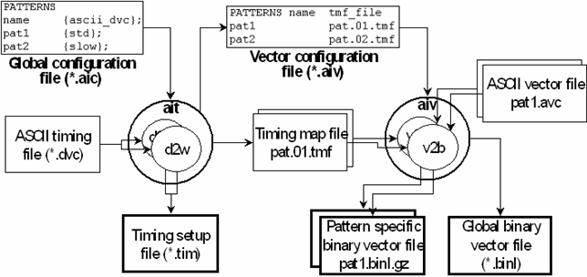

High Level Tools and Low Level Tools
Both the timing translator and the vector translator are organized on two levels. There is a high level tool, which serves as the user interface, and a low level tool, which is called, usually more than once, by the high level tool and performs the translation as described in Timing Translation and Vector Translation. You call the high level tools with a configuration file. Every line of this file contains a set of input parameters for the associated low level tool. The high level tool successively calls the low level tool with these parameter sets.
The high level tool of the timing translator is called ait; its low level tool has the name d2w. The high level tool of the vector translator is called aiv; its low level tool has the name v2b. The low level tools can also be called directly, but generally it is recommended to use the high level tools. Certain components of a multi-port setup can only be created through the high level tools.
The configuration file for ait is called a global configuration file. It is called "global" because it contains not only information for the timing translation, but also for the vector translation. The main section of this file is a table each row of which connects a pattern, among other things, with one or more ASCII device cycles. These ASCII device cycles are passed to d2w, which will create a timing setup for the pattern from them.
The configuration file for aiv is called a vector configuration file. It specifies, among other things, the ASCII vector file and timing map file which are to be used for the vector translation of the pattern. The vector configuration file is automatically created by ait. Thus, ait and d2w create all the input files for aiv and v2b except the ASCII vector files and the pin configuration file.
The following figure illustrates the operation mode of the high level tools:

The global configuration file of this example contains two entries, which associate the patterns pat1 and pat2 (name column) with the ASCII device cycles std and slow, respectively ({ascii_dvc} column). Therefore, ait calls d2w twice in order to create timings from std and slow.
ait also writes two entries into the vector configuration file. These entries connect pat1 and pat2 with the timing map files pat.01.tmf and pat.02.tmf, which the timing translation has created on the basis of the generated timing setup.
The two entries of the vector configuration file, in turn, cause aiv to call v2b twice. These calls must specify an ASCII vector file and a timing map file. Since the vector configuration file contains no names for the ASCII vector files, aiv assumes that these files derive their names from the pattern name; thus, for example, it takes the name of the ASCII vector file for pattern pat1 to be pat1.avc. The timing map files for the vector translation are specified in the vector configuration file.
Observe also the following additional points in the previous figure:
- There is only one ASCII timing file, which must contain all ASCII device cycles for all patterns (in the example: both std and slow). In contrast, every pattern has its own ASCII vector file.
- The vector translation creates one binary vector file for every pattern, and also a comprehensive binary vector file that contains the vectors for all patterns of the vector configuration file.
- The figure is incomplete insofar as both the timing and the vector translation can be called
with additional auxiliary files:
- For the timing translation, these are the x-mode control file (see The X-Mode Control File (*.cmb)), and the pin multiplexing file (see The Pin Multiplexing File (*.mux)).
- For the vector translation the auxiliary input files are the pattern configuration files (see The Pattern Configuration File (*.vbc)), the padding translation file (see The Padding Translation File), and the oversampling map file (see The Oversampling Map File). The pattern configuration files are generated automatically by the timing translation, the other files must be created manually.